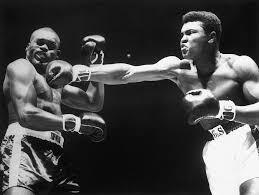

Introducere în tehnicile de box
Boxul este un sport în care tehnica și viteza fac diferența. De la poziția corectă în ring până la execuția perfectă a unei lovituri, fiecare mișcare este esențială pentru succes. În această pagină vei descoperi cele mai importante tehnici folosite în box, explicate clar și ușor de înțeles.
Poziția de Gardă
Poziția de gardă este esențială pentru echilibru, apărare și pregătirea atacurilor. Boxerii stau cu un picior înainte (de obicei cel opus mâinii dominante), coatele apropiate de corp, iar pumnii în dreptul feței.
- Gardă ortodoxă – piciorul stâng în față, folosită de dreptaci.
- Gardă southpaw – piciorul drept în față, folosită de stângaci.
Tehnici de bază
- Jab – lovitura de bază, rapidă, care ține adversarul la distanță.
- Cross – lovitură puternică executată cu mâna dominantă.
- Hook – lovitură laterală ce poate fi aplicată la nivelul capului sau corpului.
- Uppercut – lovitură ascendentă aplicată sub bărbie.
- Defensive Slip – tehnică de evitare a loviturilor prin mișcarea capului lateral.
Tehnici avansate
- Counterpunch – răspuns rapid și precis la lovitura adversarului.
- Clinching – tehnică defensivă pentru a opri atacul și a recupera forțele.
- Feinting – mișcare falsă menită să inducă adversarul în eroare.
- Pivoting – rotație rapidă pentru a schimba unghiul de atac sau a ieși din pericol.
Strategie în ring
Un boxer eficient nu se bazează doar pe forță. El citește adversarul, anticipează mișcările și își gestionează energia inteligent. Strategiile includ:
- Presiune constantă pentru a epuiza adversarul.
- Box de la distanță (out-boxing) pentru a puncta fără a risca.
- Box de aproape (in-fighting) pentru a reduce spațiul și a domina cu hook-uri și uppercut-uri.
Ghid de antrenament tehnic
Antrenamentul pentru perfecționarea tehnicilor include:
- Lovituri la sac (bag work) – pentru putere și rezistență.
- Umbra (shadowboxing) – pentru formă, viteză și corectarea posturii.
- Sparring controlat – pentru aplicarea tehnicii în condiții reale.
- Exerciții de coordonare și joc de picioare (footwork drills).
Imagine reprezentativă
Video demonstrație
Concluzie
Stăpânirea tehnicilor de box este esențială atât pentru amatori, cât și pentru profesioniști. Prin practică constantă și antrenament dedicat, fiecare luptător își poate îmbunătăți stilul, viteză și puterea de lovire.
Boxul nu este doar un sport al forței brute, ci o artă ce combină mintea și corpul într-o sinergie perfectă. Indiferent dacă dorești să participi la competiții sau doar să te menții în formă, cunoașterea acestor tehnici te va ajuta să fii mereu cu un pas înaintea adversarului.